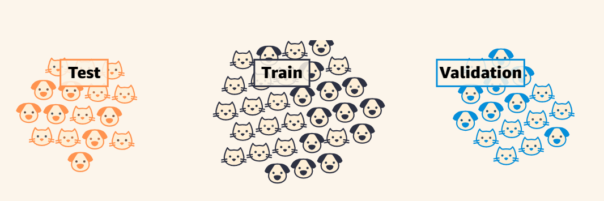

Classification I
Different sensors


- Understanding Based on mlu-explain
Goal:
- Train the data to determine cat or dog
Data set
- types: 2 types of animals
- features: weight and fluffiness
Using?
- supervised machine learning
How?
- split data into three
- training set
- Testing set
- Validation set
- How should the train it?
- Use an appropriate model
| Test | Train | Validation |
|---|---|---|
|
||
References
Shahtahmassebi, Amir Reza, Chenlu Li, Yifan Fan, Yani Wu, Yue lin, Muye Gan, Ke Wang, Arunima Malik, and George Alan Blackburn. 2021. “Remote Sensing of Urban Green Spaces: A Review.” Urban Forestry & Urban Greening 57: 126946. https://doi.org/https://doi.org/10.1016/j.ufug.2020.126946.